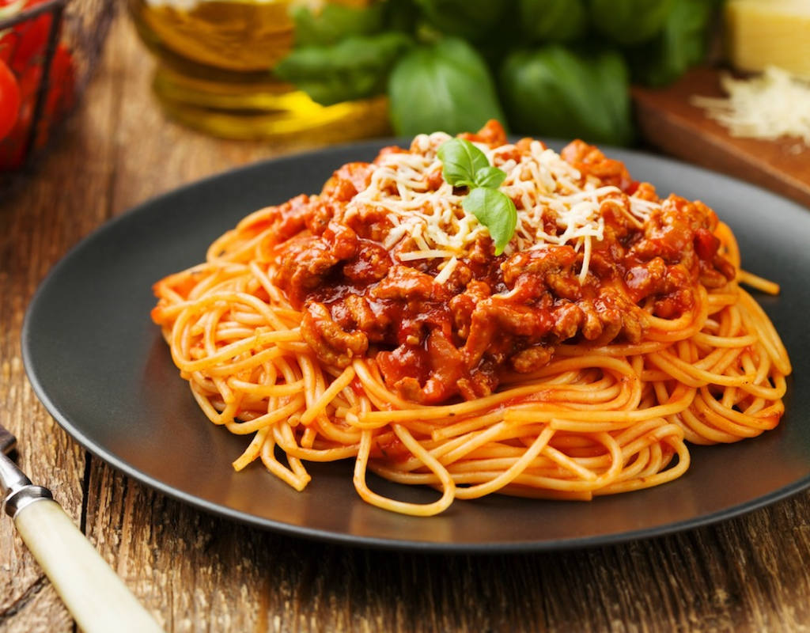

Spaghetti Bolognaise

Spaghetti Bolognaise for those hearty warm meals!
Ingredients
- 250g Spaghetti
- 500g Mince
- 1 Large Onion
- 1 Large Green Pepper
- 1 Tsp Crushed Garlic
- 1 Tsp Mixed Herbs
- 1 Tbsp Tomato Paste
- 1 Tin Tomato Puree
- 1 Tsp Sugar
- 1 Tbsp Olive Oil
Method
- Dice Onion and Green Pepper then fry with garlic in oil until it starts turning translucent.
- Add mince and cook until almost cooked all the way through.
- Add Mixed Herbs and stir through. Then add Tomato Paste and Tomato Puree, mix well and add Sugar.
- Add salt to taste.
- Cook Spaghetti and serve.